홈 카드 · 상황별 관계 버튼 (F7 장미 포인트 결)
- 자리: 연 카드 아래 "프로필 보기 ›" 자리. 아무 일 없을 때만 프로필 보기, 무언가 오갔으면 그 자리가 관계 버튼으로 바뀌어요. 홈에서 호감 · 편지를 보내는 버튼은 여전히 없어요.
- 모양: 고르셨던 장미 포인트 결 그대로 — 흰 알약 + 옅은 테두리, 하트만 장미. 서로 호감 · 서로 연결됨만 연한 장미 바탕.
- 규칙: 칸은 둘 — 호감 칸(보냄 / 받음 / 서로 호감) · 편지 칸(보냄 / 받음). 하나면 한 줄 가득, 둘이면 반씩. 편지로 서로 연결되면 한 줄 "서로 연결됨 · 편지함에서 이어가기".
- 누르면: 받은 편지 → 그 편지, 서로 연결됨 → 편지함, 나머지 → 프로필.
- 사진 모자이크: 팀 의견대로 넣지 않아요.
진한 바탕 · 다른 색 (흰 글자 · 흰 하트)
- 색은 모두 우리 토큰 600단계(밝은 레드만 500). 흰 글자 대비 4.5 이상이면 작은 글자도 잘 읽혀요.
- P3 밝은 레드는 대비 3.9라 글자가 조금 약해요.
- P4 하늘은 메인 파랑이라 "누를 것" 버튼과 같은 색이 돼요.
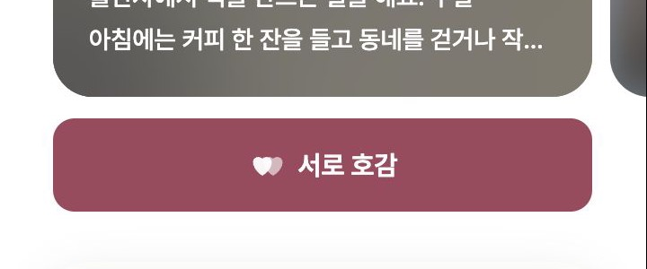
P1장미 · 지금 R2 · rose-600 #994A5D · 흰 글자 대비 6.0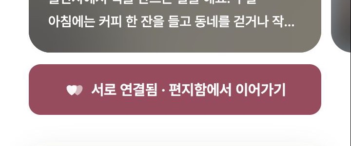
서로 연결됨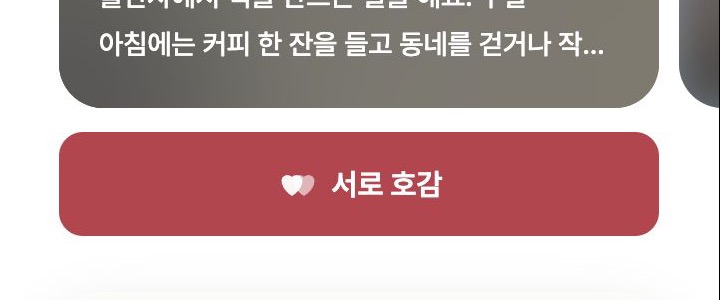
P2레드 · red-600 #B3434E · 흰 글자 대비 5.5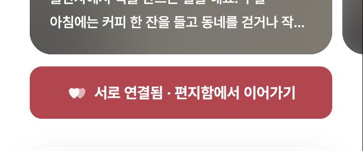
서로 연결됨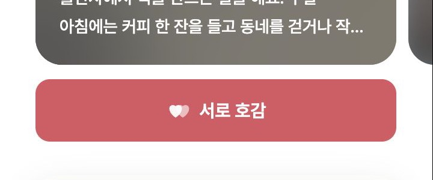
P3밝은 레드 · red-500 #CF5C65 · 흰 글자 대비 3.9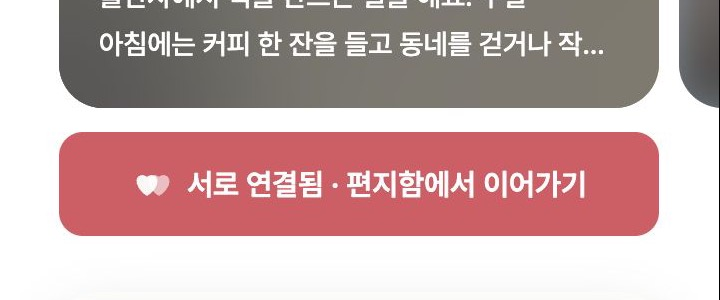
서로 연결됨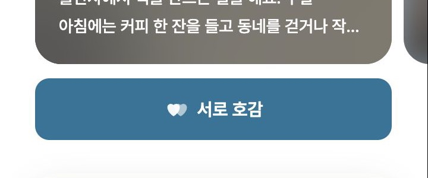
P4하늘(메인 파랑) · sky-600 #377398 · 흰 글자 대비 5.2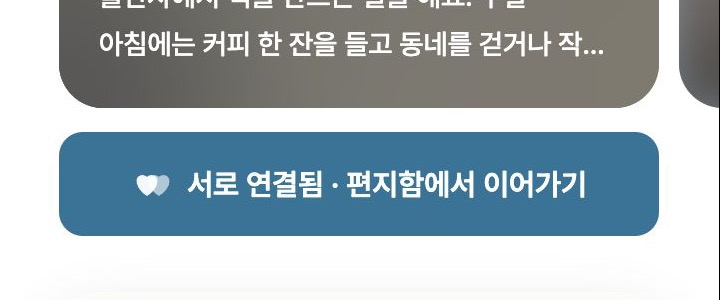
서로 연결됨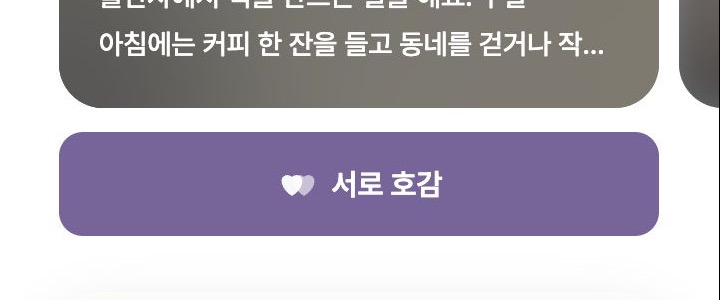
P5보라 · 밤꽃 · purple-600 #78649C · 흰 글자 대비 5.1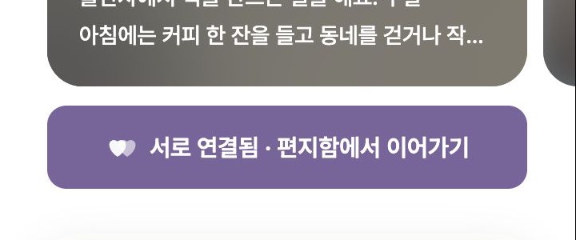
서로 연결됨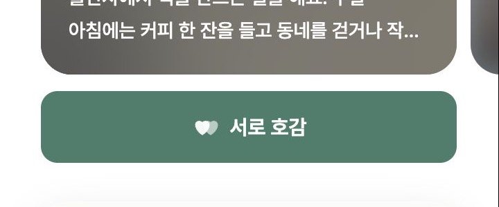
P6세이지 · sage-600 #507D6B · 흰 글자 대비 4.7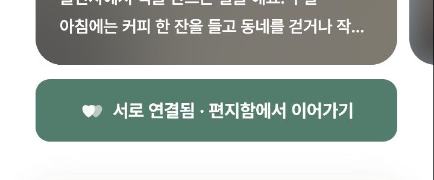
서로 연결됨서로 호감 · 서로 연결됨 색 비교
- R0 지금: 연한 장미 바탕 + 진한 장미 글자.
- R1: 지금 바탕 그대로 + 흰 글자 · 흰 하트. 바탕이 너무 옅어 글자가 거의 안 읽혀요.
- R2: 지금 글자 색(진한 장미)을 바탕으로 + 흰 글자 · 흰 하트. 카드 아래에서 가장 눈에 띄어요.
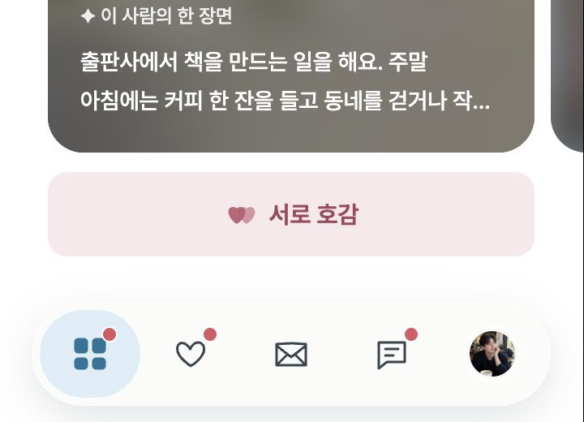
R0서로 호감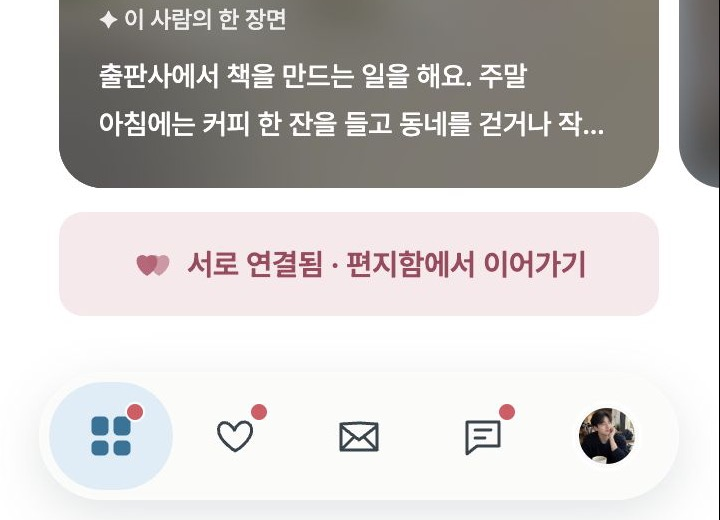
R0서로 연결됨R1서로 호감 · 지금 바탕 + 흰 글자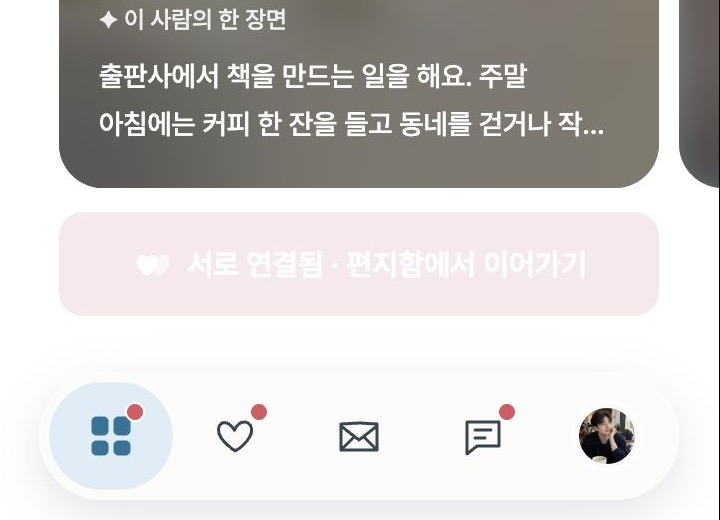
R1서로 연결됨 · 지금 바탕 + 흰 글자
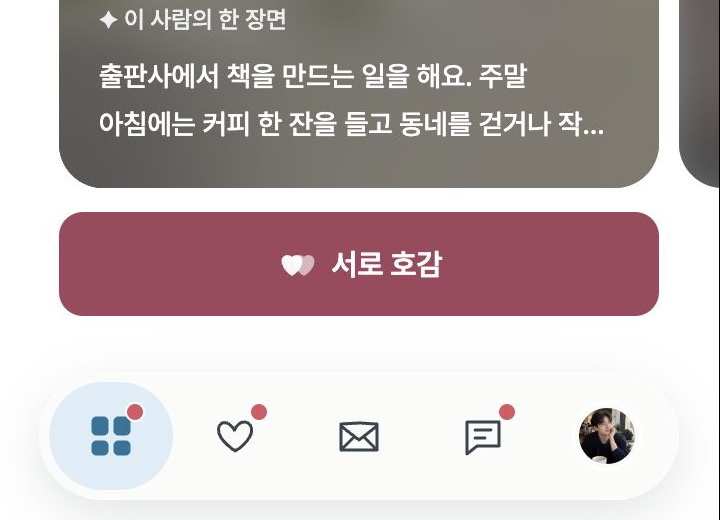
R2서로 호감 · 진한 장미 바탕 + 흰 글자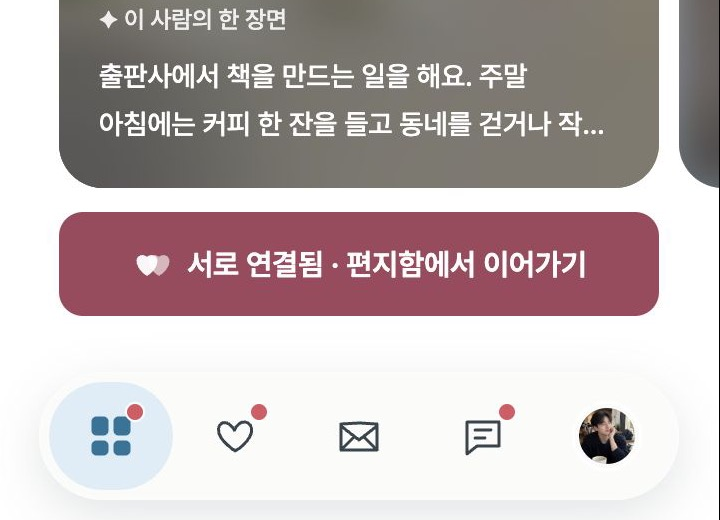
R2서로 연결됨 · 진한 장미 바탕 + 흰 글자내가 보냈을 때
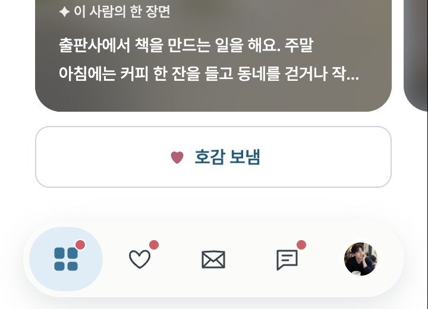
1호감만 보냄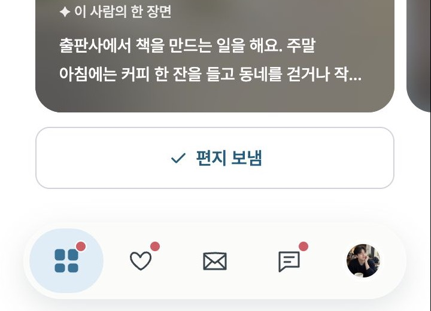
2편지만 보냄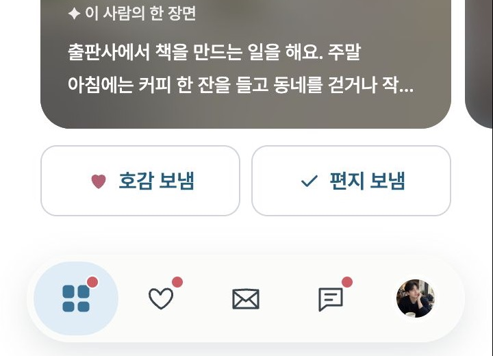
3둘 다 보냄상대가 보냈을 때
4호감만 받음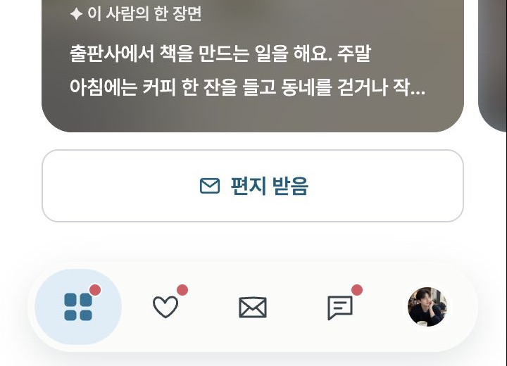
5편지만 받음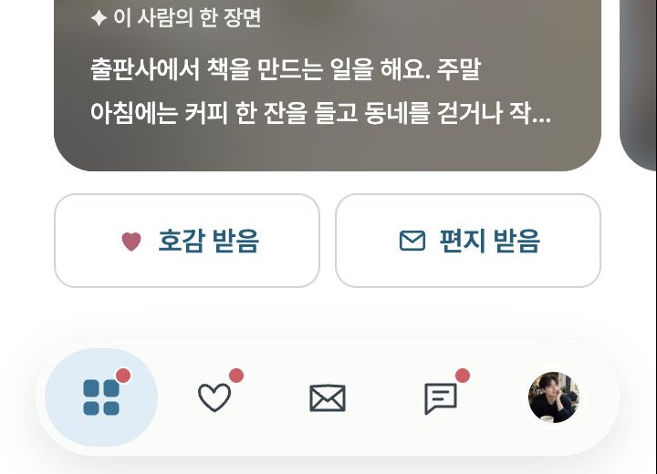
6둘 다 받음
서로
7호감이 맞닿음 · 서로 호감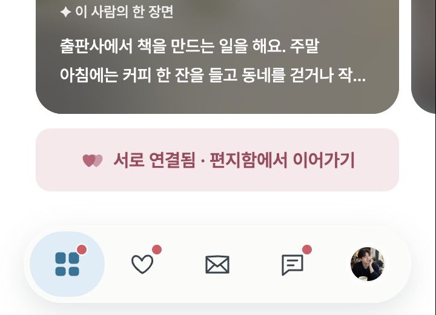
8편지로 연결 · 서로 연결됨
섞인 경우 (규칙대로)
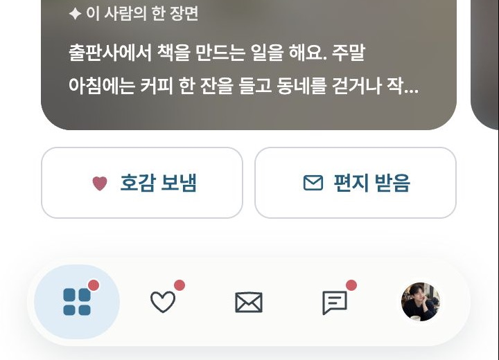
예내가 호감 보냄 + 상대 편지 받음전체둘 다 보냄 · 화면 전체